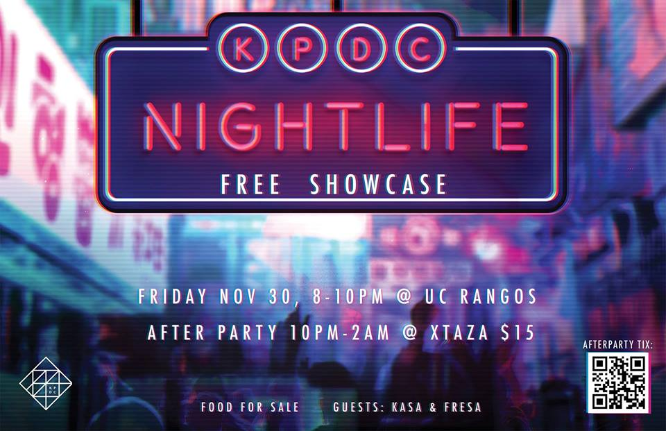
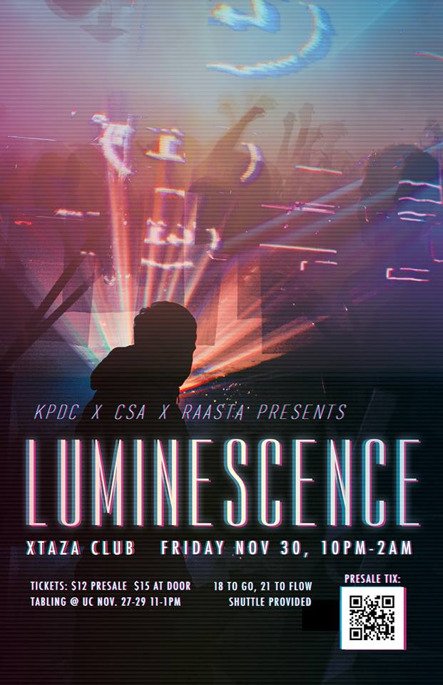

Nightlife Showcase
Friday, November 30 8:30pm @ Rangos Ballroom
This year the theme is Nightlife so expect some edgy/punk vibes! Showcase is absolutely FREE so don't miss out!
NEW: Luminescence AfterParty
Friday, November 30 10:00pm - 2:00AM @ Xtaza
For the first time ever KPDC will be co-hosting an after party right after Showcase. Party is for 18+. For more information and to buy tickets go here.
If you plan to go to the after party on the bus shuttle please fill out the bus waiver here and email it to cmukpdc@gmail.com.
